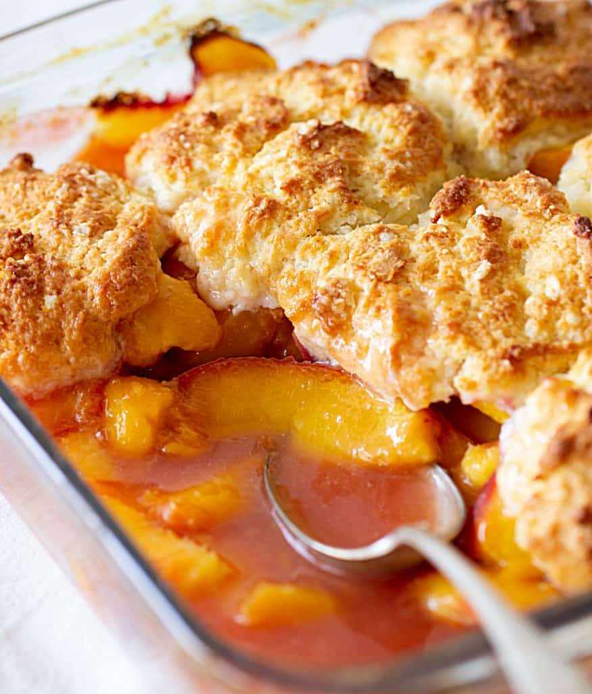

Peach Cobbler

The Best Peach Cobbler
Ingredients:
Filling
- 5 small peaches, cut into 1/4-inch-thick slices (about 5 cups)
- 3/4 cup sugar
- 1/2 teaspoon ground cinnamon
- 1/4 teaspoon kosher salt
- 2 teaspoons fresh lemon juice
Batter
- 1/2 stick (4 tablespoons) unsalted butter
- 3/4 cup all-purpose flour
- 3/4 cup sugar
- 1 1/2 teaspoons baking powder
- 1/4 teaspoon kosher salt
- 1/2 teaspoon pure vanilla extract
- 3/4 cup milk, at room temperature
Directions:
- For the filling: Put the peaches, sugar, cinnamon, salt and lemon juice in a medium saucepan. Place over medium heat and cook, stirring occasionally, until the sugar is dissolved and the peach juices begin to boil. Lower to a simmer and continue to cook for 5 minutes. Remove from the heat.
- For the batter: Put the butter in a 2-quart baking dish and place it in the oven while it preheats. Preheat the oven to 350 degrees F.
- Whisk together the flour, sugar, baking powder and salt in a medium bowl. Stir the vanilla into the milk in a liquid measuring cup. Slowly pour the wet ingredients into the dry ingredients while whisking until well combined.
- Remove the baking dish from the oven and pour the batter in an even layer over the melted butter. Spoon the peaches along with their juices evenly over the top of the batter. Bake until the cobbler is golden brown on top and the peach juices are bubbling, 35 to 45 minutes.
- Let cool to room temperature before serving.
Front Page Pecan Pie Strawberry Shortcake